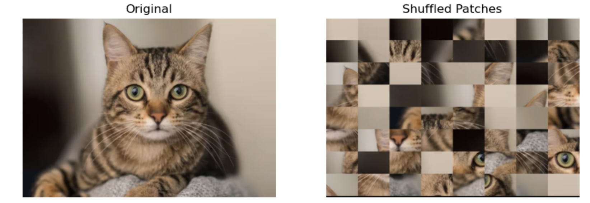
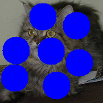

Ensembles: Part II.
(Note: This post is a bit long)
In my previous post (Ensembles Part I), I described at the basic level, the way ensembles are used in physics. In this post, I will explore how the same concept is implemented in ML, DL, and AI. There has been a lot of work done on the statistical mechanics of Deep Learning and AI, but those are naturally very mathematical and quite advanced [1,2,3]. Here, I am restricting myself to examples of ensemble approach in different models and methods.
Before I begin, a historical sidebar is in order:
As a student, I got introduced to ensembles via Statistical Mechanics in physics and naturally assumed that one of the luminaries of statistical mechanics must have invented it. Recently though, while reading some very old papers (a longtime hobby of mine and for background research for another publication I plan to start), I came across a public lecture by James Clerk Maxwell [4], who credits statisticians processing census data with inventing this method of ensembles in early to mid 1800s. I look at this not as a game of who did it first but a natural consequence of intersection of ideas. The whole of AI is built upon the foundations of Statistics, Mathematics, Computer Science, and Physics. The relevant extract of the lecture is at the end of this post.
Back to the main theme…
There are two fundamental aspects to consider when we apply ML methods to any problem.
The first is to recognize and remember that in ML and AI, we are always trying to find and analyze patterned states.
This is the biggest point of divergence between systems in Physics and ML. In physics we are typically dealing with systems at equilibrium or states of maximum entropy, whereas in any ML, DL, AI, the goal is to identify, classify, predict patterns. A patterned state by definition is one of lower entropy compared to randomly distributed data.
It is not that physics models can’t deal with patterns, of course they do, from all sorts of waves to crystal structures and turbulent flow etc. etc. but when we are dealing with systems not at equilibrium, at the very least, we have to be careful how we extend the methods of equilibrium situations. Classic examples of this are non-equilibrium thermodynamics and pattern formation in dynamical systems.
The second aspect is to differentiate between the machinery/algorithm/model used to catch those patterns and the pattern itself. A snapshot of a cat is a patterned state compared to random pixel values, but a model to classify it as a cat has its own training dynamics and ideally it reaches its own equilibrium state when it has “recognized” that pattern. Given that we stop the training at some specified point using some cutoffs, it is probably more accurate to say that the model reaches its own “steady state”.
A dynamical or non-equilibrium thermodynamic steady state is different than true equilibrium. It is a state that while being patterned, maintains that pattern for a long time (indefinitely in principle unless disturbed). Think of zebra stripes or the vortex of a tornado, or even our body temperature or the body itself. Incidentally, the grandfather of AI, Alan Turing, was the first one to model and analyze patterns generated out of chemical reactions using Reaction-Diffusion equations [5].
Now we can look at some specific situations of ensembles in ML and AI.
There are four main types of data that get used in pretty much all of AI— text, images, tabular data, and audio. Video can be considered essentially as a combination of the above. Irrespective of the data modality, in majority of the cases, we are not looking for any kind of exact function that describes something (unlike in math or physics). We are usually performing statistical inferencing or “solving” the issue at hand in a statistical manner. We are answering questions like how many times the model correctly describes the data or what is the most likely event or outcome given what we know has happened. Whether it is about predicting the next word or identifying cats vs dogs, or forecasting stock prices, we “train” our models to some satisfactory accuracy and use them to answer questions in a statistical manner with some confidence level.
One way or another, pretty much every model or method, requires either creation of or partitioning of data in ways that amount to creating ensembles. Apart from a few models like Random Forests, this subtle issue is not explicitly mentioned but it is present nonetheless. I will elaborate this point by using the following examples:
Random Forests
Data Augmentation
Surrogate and Synthetic Data
Generative AI
I will not go into text data or time series data because both require their own separate treatment; because of the way we use language in a context dependent manner for text data and the importance of chronological order in time series data. I will just point out that creation of ensembles is an essential first step because it is about data preparation and data processing and the success of a model critically depends on it.
Random Forests (RF):
Suppose you are trying to analyze an issue that may (or may not) depend on a bunch of variables. You are not sure how many variables or which ones are the most relevant. So you collect data for all of the possible variables or do what you can. For the sake of concreteness, lets say we have some data about people and we have both categorical and numerical variables like age, gender, highest degree, annual income, height, weight, marital status, employment, favorite color, favorite cuisine, etc. etc. The question we need answered is not terribly important here, but in principle, we could make a single decision tree by factoring in every single variable and running through that decision tree. At worst, we may have to assign some arbitrary cutoffs for numerical variables to decide whether to go down one path or the other. It is possible but somewhat fixed and rigid process.
This is where Random Forests come in [6]. Instead of dealing with all the variables at once, we make a decision tree with a few variables, a subset of total number of variables. We do this at each node where we are deciding which path to follow. The collection of all such decisions trees is called, for obvious reasons, a Random Forest. But in essence, we have created an ensemble of decision trees.
We do this because a single decision tree is susceptible to “over fitting”, meaning it works mostly for that dataset and that question. It is also susceptible to giving wildly different answers when we make tiny changes to the data—– it has high variance. When we create an ensemble of decision trees, we are in effect saying that we don’t know which variables are the most relevant and which ones are not, let that emerge from the process. Since we also run through many randomized combinations of variables at each node, the variance decreases. Occasionally, we may get a wildly different result but generally (and hopefully) they will follow some sensible distribution with a well-defined peak or most probable outcome.
This may not look like the “gas in a box” scenario at first glance, but we are going through “micro-states” of trees and an outlier result is like all of the gas in a corner! What is different is that instead of one fixed macro variable, we have a distribution of final answers. What we do with that depends on whether the problem was regression or classification. For regression problem, we want our “micro-states” to inform us about a certain relationship between dependent and independent variables and we get to that desired outcome by imposing minimum standard error (MSE) requirement. For classification problems, instead of one fixed macro variable value, we have two classes (for simplicity), and every outcome is put in one class or the other and misclassification error is minimized.
A sidebar:
A cute demo of something similar to RFs is what’s known as Galton’s Board. A particle is dropped through wooden pegs. Depending on which path it takes, it lands somewhere, but when we repeat the experiment for a large number of particles, or create ensembles and average them out, we get a Gaussian distribution. The most probable outcome is peaked right below the root node. Check out: https://imgur.com/gallery/galton-board-uALvLTe and https://en.wikipedia.org/wiki/Galton_board.
There are too many subtle nuances in going from DTs to RFs in terms of implementation, efficiency of algorithm, splitting the data into training and testing, cost function to minimize, etc. Each of these in turn relies on the fact that we are working with ensembles and a priori it is not obvious how should we go about creating them. All such attempts at improving the basic method give rise to new approaches like bagging, gradient boosting, and the most popular of them all, XGBoost. I will go over the details of statistical methods within RFs in a dedicated post about it later in this series.
Data Augmentation:
Almost every DL and AI model dealing with images employs “data augmentation”. While it doesn’t say so explicitly, when we do that, we are creating or expanding an ensemble. Let’s see why it can be seen as such with images as a typical example.
Let’s say we are dealing with recognizing cats vs. dogs. We have a bunch of pictures of each category. Irrespective of what model we use, the first thing we do is to standardize and normalize those images in terms of size, intensity values, etc. Now, the logic goes that while we have these specific pictures, it could have been a slightly shifted picture, or maybe the camera was at an angle and the picture got rotated, or it was an extreme closeup etc. but it is still the same cat! Computationally, we apply various transformations like horizontal and vertical shifts, scaling, rotations, shearing, flipping, etc.
Recall from earlier that any ensemble is a collection of “snapshots” of the system and by doing data augmentation we are filling potentially missing but valid variations (micro-states) of the system. The caveat here is that this correspondence with statistical mechanical idea of ensembles of micro-states is not exact. In almost every problem, there are always some variations that are downright impossible or impractical and misleading at the very least. This is why we don’t apply any random transformation we feel like but stick with a select set of transformations that seem to make the ensemble and the method better. For example, if we are working on identifying cars on the road from images, flipping the images and showing upsidedown cars is unrealistic and probably not very useful. Another quick example is the figure below. You will never see different patches of an image randomly scrambled up as an “augmented” image, even though the distribution of pixel intensities is exactly the same.

There is a mathematical basis for this in terms of types of transformations that preserve certain features and the types that don’t. Notice that in some sense, we still need to keep some things constant as we create our ensembles, like the temperature or pressure in physical systems. Here, exactly what needs to stay constant (more or less) is not clear. Sometimes it is the probability distribution of some feature or features, the entire data, certain symmetries in the data, some mathematical structure or some as yet unknown thing that makes the whole thing work. We don’t know in general. More on all that in another dedicated post later.
Resampling, Surrogate Data, and Synthetic Data:
In tabular data, we can’t generally do data augmentation arbitrarily. We can’t randomly add fake employees to create bigger HR dataset! What we can do on occasion is to create multiple copies of the data with changes in the order of the data (if the order is not critical) or equivalent changes to some features. Again, it is not that straightforward to know whether we are somehow introducing more bias in the system or not. The idea is to maintain the distribution of the features and the dataset as a whole. adding similar data is called the surrogate method. It is used not just in tabular data but in time series data as well. There is a long history of analyzing chaotic dynamical systems using surrogate data. A collection of such copies of original data will again be an ensemble. The more representative the ensemble is the better.
Synthetic data is based purely on the idea that the certain features follow some specific distribution of values. The idea is to create datasets by pulling numbers from these distributions randomly and create an ensemble of datasets.
Finally, the most basic step in any method is the “train-test” split or a separate validation set also included sometimes. There is usual practice is to do something like 80/20 split, where 80% of the data is used for training and 20% for testing. Since the training data is picked at random (while keeping various caveats in mind), we can get an ensemble of train-test pair. Each time a model is run on a slightly different training dataset (Resampling), we will get a different performance on the test dataset. This is for a different reason than the model converging on some small value of error or a high value of accuracy at later epochs.
We still don’t have a first-principles theory of the whole connection between data ensembles and ML/AI methods. Even within one specific model, we don’t have the full theory like in statistical physics, but we do know that elements from equilibrium and non-equilibrium statistical physics do seem to be applicable to strangely different problems like identifying cats vs. dogs.
We need to only look at generative AI to know this. Creating a new image from a supplied image or text is built upon principles of non-equilibrium thermodynamics and diffusion (hence the name “stable diffusion”). The idea is to add noise to the starting system, let it evolve and guide it to a different steady state via diffusion. Obviously, this is an oversimplified explanation and there is rigorous math and statistical physics involved in it but here I just want to mention that generative AI as we have it would not work without it.
Over the course of this series of posts, I will revisit each of these concepts individually with key mathematics and physics concepts that are involved and that seem to make these models work even though we don’t know exactly how or why. We do know that if we apply these concepts as if our problems were similar to a thermodynamic system and if we tune everything just right (hyper-parameter tuning), then we can do all sorts of things like detecting diseases to forecasting sales figures; anything that requires finding patterns buried within the data.
In my next post, I will explore the concept of entropy. A much used concept found in both physics and information science and used extensively in ML/AI in multiple ways.
In the meanwhile, a few questions to ponder over:
Think of image augmentation. At what point, as we keep transforming say a cat picture, it is no longer recognizable as a cat? Is it an abrupt process or gradual? What is changing mathematically (shape, size, colors, orientation?) and context-wise as we keep transforming an image? Is there anything that still stays constant? What should an ensemble for ML/AI problems be like (preferred properties)?
Can we have more dramatic transformations like the picture below where we block out certain areas? This is what is known as occlusion studies, where only a part of the object is visible. Here, we are obviously changing the distribution of pixel intensities as well, yet we can easily identify a cat. The question is how to make an algorithm identify it.

- We haven’t talked about text data but common sense tells us that just to create multiple variations of a sentence, and hence an ensemble, we cannot randomly shuffle around letters because then the meaning is destroyed. Can we create an ensemble by adding a bunch of useless words to a sentence and call it “another version”? How about using synonyms for every word whenever possible?
The main point behind these questions is to emphasize that we actually don’t know for sure. We have hints and clues and sometimes mathematical or contextual reasons for all of the questions above but no theory from some kind of first principles, which is why pretty much everything, even very simple questions, are still or should be topics of research.
As promised at the beginning, pictures of James Clerk Maxwell’s Lecture on Diffusion, where he talks about Section F (statistics division) coming up with the ensemble approach. Hope you enjoyed this rather long post.

References:
“Statistical Mechanics of Deep Learning”, Bahri et al., Annual Review of Condensed Matter
Physics (2020).11:501–28.“Statistical mechanics of deep learning”, Freya Behrens et al., J. Stat. Mech. (2024) 104007.
“SETOL: A Semi-Empirical Theory of (Deep) Learning”, Charles Martin and Christopher Hinrichs, arXiv:2507.17912v2 [cs.LG], (2025).
“MOLECULES”, James Clerk-Maxwell, The College Courant, Nov. 8, 1873, Vol. 13, No. 17, pp. 193-197.
“Random Decision Forests”, Tin Kam Ho, Proceedings of 3rd International Conference on Document Analysis and Recognition, Montreal, QC, Canada, 1995, pp. 278-282 vol.1.
“The chemical basis of morphogenesis”, Phil. Trans. R. Soc. Lond. B 237:37-72.